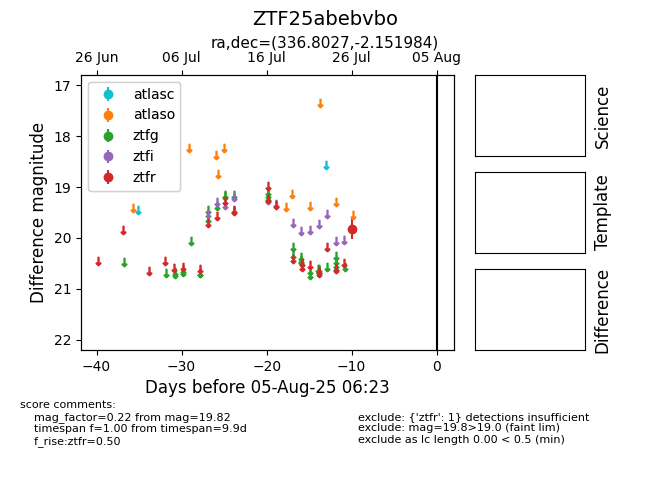

Target ZTF25abebvbo at 2025-08-06 17:27, see:
FINK: fink-portal.org/ZTF25abebvbo
Lasair: lasair-ztf.lsst.ac.uk/objects/ZTF25abebvbo
ALeRCE: alerce.online/object/ZTF25abebvbo
alt names
ZTF25abebvbo (ztf,fink)
coordinates:
equatorial (ra, dec) = (336.8027,-2.15198)
galactic (l, b) = (62.5927,-47.40123)
photometry
last ztfr=19.82
1 ztfr detections
